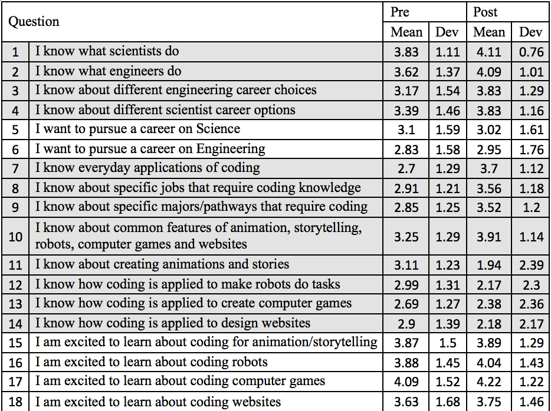

Pre- and post-camp survey questions and responses (back to homepage)
The camp was attended by 116 girls. 100 took the pre-camp survey and
116 took the post-camp survey. There were 49% 6th graders, 25% 7th
graders, and 26% 8th graders.
The following essay questions were asked. Click on the links to see the responses.
Pre-camp
Q. What do you expect to learn from this camp?
Post-camp
Q. What did you like the most about the camp? Please elaborate
Q. What did you like the least about the camp? Please elaborate
Q. How do you think we can improve this experience for future students? Please elaborate
Q. This camp code for girls is funded by the Texas Workforce Commission
(TWC). Please use the space below to share any comments you would
like us to pass to TWC, specifically on how this camp has helped you to
consider careers in engineering or science.
The following multiple choice questions were asked on a 5-point Likeart
scale. The scores were converted using the following scheme: 1-Strongly
disagree; 2 - Somewhat disagree; 3 - Neither agree or disagree; 4 -
Somewhat agree; 5 - Strongly agree.

Pre-camp question:
What do you expect to learn from this camp?
'How to code because of this name because we should learn coding from this camp because it's in the name.'
'How to animate.'
'The keys to luck, fame, and sucess. (JK)'
'how to code simple things'
'robotics'
'coding'
'I expect to know how to make a website and know how to code with robots.'
'coding'
'Animation'
'learning stuff about engineering'
'robotics'
'I expect to learn more about Robotics because I am very intersested in that current field.'
'Learning more on to code and make a story out of codding.'
'I expect to learn how to make a website'
'how to pursue what i learn about in this class and put it into future skills'
'Making websites and animations'
'The basics of coding, enough to make my own game'
'whatever they teach me '
'i expect to learn how to code a basic robot.'
'more about coding'
'I expect to learn a lot about engineering or some kind of creation you do on some type of technology.'
'I would like to learn how to code websites.'
'how to code and learn it'
'sience things'
'i expect to learn about computer coding'
'how to make animations and games'
'how to create things on computers that I did not know how to do,and be able to teach them to others.'
'Coding '
'how to use computers to code and engineer'
'Different options for engineering, and some simple coding programs.'
'to do animations and coding'
'I hope I learn to HACK'
'How to code '
'More about how to code.'
'How to create a game.'
'coding and engineering '
'How to code and create a website'
'to code better and learn more'
'lot of imformation to help me'
'how to make objects in the computer work in specifics'
'Coding '
'a basic understanding of coding as a whole'
'How to code.'
'how to code'
'coding and food'
'coding'
'alot'
'I expect to learn somethings about coding'
'I expect to learn new things that i didn't know before i walked in'
'FREE FOOD AND MORE FOOD!!!!!!!!'
'Fun'
'How to code and program robots'
'How to create videogames or websites and maybe a lil of robotics'
'how to build a website and to build robots'
'to code'
'to know how to work computer.'
'to code and to have fun '
'i am not expecting learn much it would be nice to learn new things '
'more on coding'
'how to code '
'how to bild a robot and make a website'
'Coding with games,websites,robots,and animation and storytelling'
'Nothing'
'how to code different items'
'How to code websites'
'How to code and build things better than I know how to.'
'new edvanced coding skills'
'how to learn how to make robots,a game.'
'how to code diferent games and i expect to get beter at coding and programing.'
'Make a robot that does everything for you.'
'I expect to learn life skills I can use in the futer'
' How to complete a maze'
'to code and how to make games and animations'
'How to code'
'how to code better'
'I think I will learn a lot about coding.'
'Coding and fun'
'I am expecting to learn Coding, Math, and Science'
'how to code'
'How to get better at coding and animating '
'I expect to learn how to create websites, create computer games, etc..'
'Technology, And science'
'how to code'
'How to Code'
'How to code and engineer differnt types of things.'
'coding ,animation,math'
'learning different coding and how it will help within a good job'
'I expect to learn how to code and program software'
'How to make a video game'
'how to code better and faster'
'I don't really know...anything. It probablly will be cool. '
'anything about engineering'
'how to make computer games'
'I expect to learn the different ways you can code.'
'a lot of working with animation and coding computer games too.'
'how to code difrent things'
'how to succsessfully code a robot and make it perform tasks'
'Coding'
'I want to learn more about coding and how to code.'
'I think I will learn more about coding and engineering.'
'How to make entertainig stuff on computers.'
'A lot...'
'robotws'
'I expect to learn code software. -_-'
'I expect to learn how to create games, websites, to
fully remember how to program the robots, and learn how to use more
sensors.'
'How to code simple games and websites.'
'I expect to learn how to code games, make robots and make websites.'
'something'
's.t.e.m'
'i want to learn how to do robotics.'
'coding animation'
'I hope to learn a viarity of coding skills that I lack.'
'how to make a Animation game'
'I think I am expected to learn coding robots and coding games'
'how to make a robot .'
Post-camp question:
What did you like the most about the camp? Please elaborate
'I loved everything about the camp. I got to make
new friends, code games, make websites, and code even more!'
'The Websites because we could be creative!'
'Robots and TAs'
'I like the coding the most in this camp, because I
honestly understand coding the most out of the other we did. Also, we
did practicaly do almost literaly everyday of coding. So it is really
easy for me to coding the most.'
'The thing i liked most was scratch because we could make stories and games.'
'The robobtics part, because it was hands on.'
'What I enjoy about this camp is the good energy!And the food is really great!'
'i liked the animations and the robots.'
'creating things'
'The thing I liked most about this camp was learning
how to do different codes for specific tasks I want to complete. I also
liked the food, it was very delicious and so was the serving amounts.'
'I like building a robot and coding it '
'i liked making the robot do stuff'
'The building and coding robots part'
'I like the block coding, and how we have to piece together the steps to any action in the code.'
'I loved the first day of camp, though it was a hassle it still was fun.'
'it was really friendly and we didnt have trouble asking for help '
'i liked making and coding robots but somehow i
liked coding more and i liked making a small game but once againg i
really liked coding it and i liked our lunch'
'i liked that we all worked to together and did
different things like builed robots and create are own games and it was
my firts time doing this and i really liked it'
'i like the tech'
'I like when we made games '
'I loved how when we were to do a task it was
simple,and the instructions were very descriptive.i new what i was
doing,and not confused.'
'Makeing games that work'
'I liked how we built robots out of legos and raced our robots.'
'The opprotunitity to experiment and the prosess of trial and error to sucess.'
'coding the robots and coding/watching animations.'
'Learning how to code better and how to use a computer better.'
'The coding of the robot. '
'that you get to do fun things'
'creating a game'
'I liked that we learn by doing hands on activity while having fun with others.'
'Animating'
'I liked making the robot and having a good time with my friends'
'the enviroment in it'
'i liked building a robot.'
'learning more about coding anad meet new people'
'the staff they are sooo smart, funny, and kind.'
'coding animations'
'I enjoyed the different activities we completed for
the 5 days. My favorite day was the computer games day (third day). I
liked this day because I felt that making computer games was a fun and
challenging activity.'
'I liked making the games.'
'We get to work on computers and do different things everyday.'
'making the robots'
'getting to make a computer game and a website'
'I liked making the robot and using the legos. '
'That I got to learn more than I knew when I came'
'Building a robot and making a game'
'Coding our computer game'
'working together to make games and stories and robots'
'the team is so nice to everyone and i have a lot of fun.'
'I really liked the atmosphere. Everyone was super
funny. I also enjoyed sharing our projects with everyone. '
'The good knoweledge of ta's'
'Creating our own game because we can play our own made game and to show people.'
'I LIKED SCRACH AND ALL OF THE CRAETEVE STUFF!'
'having fun'
'I like the fact that i got to learn new things to do.'
'Is meeting new people and learning about new things.'
'i lliked scratch and making websites because i like things with creativity'
'that we got to make our own games and animations'
'I liked making computer games and SCRATCH!!!'
'I liked how everyone is so welcoming, funny, caring, trusting, unique, encouraging, friendly, and helpful.'
'robot coding'
'I liked racing robots.'
'I liked learning about making games and websites.'
'The fun and my friends'
'the Robot racing and the food.'
'i like that im learing thing like coding that i had no idea how to do,and lunch time'
'I liked creating a website the most. I have worked
before at it and I felt at home with creating websites! :)'
'when we created the robot and different codes for it to move '
'The Creativity that you need to use in order to be successful '
'I like the food'
'Coding a game'
'learning more about coding '
'the people '
'I really enjoyed the robotics aspect of the camp
and the website making! I also really enjoyed playing Frisbee outside
when we werent doing anything'
'the group im in'
'creating animated stories'
'i liked the websites the most cause they are cool'
'The food'
'I liked that we got to be on computers.'
'The part when we made and coded robots'
'my teacher was very informative and it helped me have fun and learn'
'I liked coding and animating computer games.'
'The thing I loved most about this camp is that we
got to make computer games and animations. I also liked programming the
robots.'
'I got to meet new people and learn more about computers.'
'it was all good'
'I liked building robots and coding in scratch'
'Making games was the what I liked the most about camp.'
'when we coded robots because i like it when i get to create cool code.'
'coding the lego cars and racing them '
'food'
'I love the food, also the staff was so helpful and
friendly I would come here again & reccomend this FIVE STARS.'
'I enjoy spending time with friends and coding our funny projects.'
'The thing I liked the most about this camp is
reshowing the fact that after college I want to enter a career in
engineering or and, scieince.'
'Lego Robots- it was the most fun day'
'the people and the things we did'
'I really liked coding the Robots and making the animations'
'we got to learn difrent types of coding'
'the FOOD. oh and the coding and animation'
'I mostly liked luanch and making a robot'
'I like that every one is nice '
'I like coding be case I can make Web sites,Games ,Robots or enething.'
What did you like the least about the camp? Please elaborate
'However, I was a little unenthusiatic about the
robotics part. For me, it was easy at first, but then it went from
super easy, to super hard where I couldn't even understand or even
learn what was happening.'
'Robotics because we our robot didn’t move and it was the most complicated'
'distance of travel to camp '
'I like the lego robots the least, because it wasn't
really that fun to me. For the websites, at least I learn how to create
one, but for the lego robots you kind of had to do too much. I do love
legos but it was kind of annoying.'
'I did not really like the robot because i dont
really like making things i just really like computers and i like
coding things and makeing stories on the computer.'
'The animation/story, because it was boring.'
'I don't like the creating websites as much.'
'nothing i liked pretty much anthing.'
'nothing'
'I didn't like having to change the location of my
sprites because at first I was unsure of what to do and it was very
difficult because the sprites kept changing their location on both
backgrounds.'
'making a website'
'i dont really like how we have to create a web site'
'The animating. Mainly because I can't animate every well.'
'I liked it, but maybe it could be less competitive.'
'Robotics. I generally don't like robotic's.'
'that people outside of your group/table didnt reslly interact with you '
'i didnt dislike anything '
'so of the questions they told us to do'
'nothing'
'I diliked when we started making websites'
'There's not much,but I didn't like all the competions.they were ok but i .would rather not do them'
'website makeing is my least fovoite'
'i think it was creating the game.'
'Too much help like I wanted to be able to try doing by myself but unfortunatly couldn't.'
'making the websites '
'Creating games and creating a robot. '
'the coding the computer games'
'i like every thing'
'making a website'
'I dint like that somtimes we couldnt understand and our teacher was making it more complicated '
'Robotics'
'When we had to do very complicated Scratch codes'
'nothing that i can think about right now'
'The coding was hard to do.'
'nothing'
'the robots'
'robotics :('
'I did not quite understand the coding for the robotics, but overall I had a great experience.'
'Having to wait useing the laptop sometimes.'
'Very cold in the classroom.'
'nothng'
'uhh?? nothing really'
'making the games were for some reason was difficult and fustrarting. '
'nothing'
'NOTHING!!!!!!!!!!!!!!!!!!!!!!!!!!!!!!!!!'
'The fact that they didnt serve us pizza on the first day'
'nothing its all fun'
'nothing'
'Nothing this camp was too good.'
'nothing'
'Create robots because there is wires on it and I
had to use light for the robot. It took a while to stay and finish.'
' I DID NOT LIKE THE ROBOT IDK WHY'
'nothing'
'NA'
'Nothing I really enjoyed it.'
'the robots because i like creative thigs not instuction'
'nothing'
'That my teem had to many people at one computer.'
'Nothing because everyone is awesome there and the camp is the best camp ever.'
'website desighing'
'waking up early'
'My least favorite part of camp was the greeting card and story. '
'Nothing'
'waking up early'
'lunch is at 12:00'
'I didn't really like the greeting card or making
the story. It wasn't as interesting as the other ones were.'
'the wedsite because they arent easy to do and difficult to control '
'nothing'
'NOTHING'
'having to wake up early'
'i dont know '
'I disliked the video game making because I didnt fully understand the process of the making'
'idk'
'programming robots with all the sensors '
'the robot problem i had my robot kept having one wheel stop and the other go backwards'
'Only one computer per group '
'ROBOTICS ew.'
'The fact that we had little time to complete each project'
'not being able to run around outside to waste our energy '
'I did not enjoy coding the robots i just didn't like it.'
'There wasn't really anything that I didin't like
about this camp but I did wish we had another day of the robotics.'
'nothing, it was great, everyone was nice and it was fun ^w^'
'the website designing'
'I don't know'
'The least thing I liked about camp was robotics.'
'that we did EVERYTHING together and inside. '
'NOTHING'
'i love everything'
'I wish the MALE SPECIES could learn here too.'
'nothing'
'I liked the fact that I could win a free chromeboook the best in this camp.'
'That we did everything in our groups and didnt do anything on our own or change groups'
'nothing i really liked it'
'I least liked the games coding'
'i liked the camp there was nothing wrong with it'
'i dont know. :]'
'I least liked about camp was scrach'
'I don"t dislike any thing about coding camp.'
'What I think we shold be exspan on how to make are projets.'
How do you think we can improve this experience for future students? Please elaborate
'Next time, try to walk students through the
robotics part just like you did with scratch. Make sure they understand
and don't include very hard projects since some are just beginners.'
'I don’t know because everything was cool'
'more presentations on projects'
'Improving the experience of this camp is not really
needed. I really enjoyed my time here, but I didn't really get to enjoy
talking to new people. I am not really social, but I feel like the
experience you can try to improve on is making us watch more fun'
'I think you could like present more things on the
tv and the computer so they can actually see there creation on the big
sceen.'
'More time for lunch.'
'I Dont think you need to improve anything !'
'For making more snack time so you have breaks to
communicate about your story or your things that you have to do'
'this will be helpful when i am older '
'I am not sure how the experience can be improved, I have enjoyed this camp.'
'i don't know'
'you dont really have to change anything'
'Explain the topic more.'
' Make only some of the days a competition if you want to.'
'Maybe give a take on how much they know about coding. I already know past java for instance.'
'to have groups/tables interact with people not inside your group/table '
'a bit more explanation because its a bit complicated'
'to improve this experience for future students your
teaching them how do code because they can learn more about it and in
the future theres ganna be now things so they are telling us what is
happing and what we need to know so we can get ready for the fut'
'i think your doing fine with that'
'Honestly nothing eveything was good '
'i really thimnk everyhting was greatI think this camp should continue doing what it does.'
'no imorovment needed'
'I don't think you need any improvements.'
'Make the location more accsesiable.'
'To teach kids how to code and how to create websites.'
'i think its good so far'
'do new or more stuff for them so they can learned
more for the future kids like make them learn aleast 3 things to do and
learned'
'I think you can present and explain as a whole class before staring the work .'
'Make robotics a little easier'
'Do more fun activities that provide moving more'
'this was well strucktured camp and i think that was perfect to bring chalenges for people'
'multiple days on one subject.'
'i have nothing'
'i don't know'
'remove robotics'
'Can I have more time, in the day, for the activites we do.'
'Give us more times.'
'Remind students to bring a jacket.'
'turn the air down a little'
'add abit about learning to programn using a computer language such as PYTHON OR ADAH'
'overall I had fun and the experience was fun but maybe move around the kids to get to know eachother. '
'nothing'
'Learn to use a language like PYTHON '
'Give a laptop to each person'
'help them like you helped us'
'to just have fun'
'Maybe make the camp longer. Because its so
fun!!!!!!!!!!!!!!!!!!!!!!!!!!!!!!!!!!!!!!!!!!!!!!!!!!!!!!!!!!!!!!!!!!!!!!!!!!!!!!!!!!!!!!!!!!!!!!!!!!!!!!!!!!!!!!!!!!!!!!!!!!!!!!!'
'nothing'
'To take more breaks, have more time to finish
missing things from the other days, because I couldn't finish stuff
from our camp days because I was more foused on my work.'
'IDK'
'bigger room'
'NA'
'I don't know I had a really good time.'
'IDK'
'that to have it a little more easy'
'Always have teems of 2.'
'They should make camp longer and let it be more than one week.'
'make it longer,and make table groups not panters'
'Table groups not partners we want more people.'
'To have a little more time for the students to work. '
'let them be in a group instead of a partner'
'do not have partners'
'lucnh at 11:30'
'Probably by giving the students more time to work on each project so the work can be better.'
'add a video on how they create the wedsite step by step '
'The place where you teach could be bigger'
'i think its the fine the way it iis'
'More slots available for more people to join'
'i dont know'
'I would really like if the mentors could explain the process of how to do the coding in an easier way. '
'idk'
'none'
'i have no idea'
'raise money such as fundraisers for more laptops '
'It was fine just fine.'
'I believe you can make this camp better by elaborating on each subject before we start it'
'science engineering '
'maybe more coding.'
'Maybe this camp could be two weeks so then the
first week we could do easy things and then the second week we could do
harder things.'
'You should likely extend the camp to 2:15, this way more students get chances to present.'
'fix the pdf's; we were told to do different things than what was on the pdf's for some of the topics'
'I don't know'
'I think you can improve bye making the activities a little bit easier.'
'do some more coding.'
'have one more week of camp'
'more science work'
'Get a bigger room for more Students & Staff.'
'Turning off the air conditioner.'
'You could inprove your future student experiences of future students by geting a bigger room. '
'warmer classroom but thats it it was really fun and i liked it!! '
'doing more robotics '
'I think you all could do more involving Robots'
'more time to work'
'to make the most out of it '
'more fun activties'
'I think you can improve by exsplaning a little more.'
'Exspane how to do the projets'
This camp code for girls is funded by the Texas Workforce Commission
(TWC). Please use the space below to share any comments you would
like us to pass to TWC, specifically on how this camp has helped you to
consider careers in engineering or science.
'we built robots and coded in scratch'
'It has helped me understand more about coding and engineering.'
'This camp is definetly a keeper it gave the opprotunity to try things i would never try.'
'I loved the camp,I learned a lot like making games and animations on scratch and programing robots.'
'I learned a lot at this camp and it was really fun.'
'this camp, was very heplful. before coming to this
i didnt know anything about coding. now i know somewhat to do, in case
i ever want to go into the coding pathway as a career choice.'
'it really helped me expand my knowlage'
'its a awsome
camp!!!!!!!!!!!!!!!!!!!!!!!!!!!!!!!!!!!!!!!!!!!!!!!!!!!!!!!!!!!!!!!!!!!!!!!!!!!!!!!!!!!!!!!!!!!!!!!!!!!!!!!!!!!!!!!!!!!!!!!!!!!!!!!!!!!!!!!!!!!!!!!!!!!!!!!!!!!!!!!!!!!!!!!!!!!!!!'
'It helped me want to animate things more and maybe create advretisements for people or something.'
'Do more robot activities '
'even befor the camp i wanted to do civil or a industrial engineering'
'Thanks for helping me etter understand coding and
such.I really want to pursue a carrer in science and chemistry to find
a cure for altzheimers.'
'i love this camp. It helped me learn more about coding and enginnering.'
'sure'
'i was suffering during robotics.'
'This camp has made me feel comfortable with coding
games, robots, and animation. I deeply appreciate everything this camp
has offered to me. The teaching assisstants really helped me understand
the information thoroughly.'
'No comment, it was really fun.'
'I thimk it is great that we are powering girls to consider different jobs including engineering or science'
'the food was eggslent'
'I REALLY ENJOYED IT!!!'
'The directors were friendly and fun to talk to. '
'LOVE IT !!!!!!!!!!!!!!!'
'No comment'
'how we can learn more math and science in coding'
'i really like to build robots and everything .'
'This camp showed me that there are so many
possiblitys in the field of engineering. And you have to be open to try
new things.'
'This camp helped me for responsiblity for my work and how to make stuff on computers.'
'in everything'
'It has helped me inprove more on my education sothank you'
'It has helped me to want to be in mechanical engineering'
'IDK'
'that i know how to create games and animations'
'LONG LIVE LOKEY!!!!'
'This camp showed me that there are so many girls in the world who have a passion in the engineering field. '
'this camp has help show me there is a lot more to coding than the tiny bit that they show at school'
'It showed me a great time the best I had lots of fun here.'
'Coming into this camp I did not want to be an
engineer at all. After this camp I am going to consider engineering
options.'
'i love that there letting girls learn to code '
'making robots helped me understand how to do engineering and science'
'i leared how to code step by step it makes it esay to undresand'
'this camp has help me want a career in engineering because they program and code robots '
'Thank you os much for giving me this oppurtunity'
'I wouldnt like to but its an option on my bucket list.'
'It helped me learn about robotics and designing a website'
'I DONT KNOW '
'I really enjoyed how this camp helped me understand better how to code!'
'idk'
'i am not considering a carreer in either.'
'LE EPIC!!!!!!!!'
'I dont have any comments. Wait a second that was a comment.'
'It has helped me understand the basics of coding and engineering'
'by showing the different kinds of things they do in their daily job '
'I realized that I enjoy coding and want to pursue a
job in it, like either Software development or Cyber Security.'
'This camp gave me a better intrest in coding and it also made me realize that coding is fun.'
'It was fun, although psychiatry is cooler, but the
camp was really good and would definitely hook in other students!'
'i learned how to animate and code much better, how
to use sensors, and i learned that i dont like to make websites.'
'This camp was fun and i enjoyed learning about coding '
'Thankyou.'
'???????'
'bigger room and warmer climate in the room.'
'it helped me learned the diffrent types of enginering'
' It's pretty cool I guess..I liked making a website.'
'coding can get boring but it reminds me it's worth it because at the end I coded something amazing.'
'Nope, no comments.'
'it was lots of fun and i learned alot too!!!'
'it helped me learn more about how to code and make animations'
'I still want to be either an engineer or an architect'
'it healped me understand more about coding'
'??????' 'This camp show me a lot about engineering and coding.'